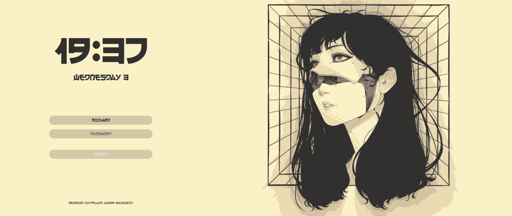

Cosmic, sddm, and Omarchy
Please, note: I don’t know much about linux, so be careful when running commands and be sure to back up your stuff when you feel like you might break things.
Although Omarchy is supposed to be used ‘as is’, of course people are going to want to tinker it. In my case I wanted two things: to test the Cosmic desktop environment and add a separate user for family and friends so they have a separate and friendly environment to use my computer. Along the way I found out that I could use some nice themes for the sddm display manager and could logout from the menu in omarchy.
installing cosmic
The first thing I did was to remove the autologin to my default user so later on you can change manually which desktop environment you want for the session. The autologin file should be in /etc/sddm.conf/autologin.conf and it looks something like
[Autologin]
User=<your_user>
Session=hyprland-uwsm
[Theme]
Current=breezeYou may want to backup that file before removing it. Now, to install cosmic just run1:
sudo rm /etc/sddm.conf.d/autologin.conf
sudo pacman -Syu
sudo pacman -S cosmic --ignore cosmic-initial-setupThen
sudo systemctl restart sddm
You should be redirected to the sddm login screen. There you can select your desktop environment by clicking the gear icon somewhere in the top left corner. Just choose cosmic, enter the password and that should be it.
hyprctl issues
After installing cosmic, instead of using sudo systemctl restart sddm I guess you could use hyprctl dispatch exit. But for some reason it was sending me to a black screen, so that’s why I restarted sddm. This issue came back when I tried to add the option to logout from the menu.
adding users to omarchy
To add new users, just run
sudo useradd -m -G wheel,network -s /bin/bash <user_name>
sudo passwd <user_password>where -m creates a the user’s home directory, -G adds groups to the account and -s is the account login shell (just felt like sharing this info).
adding a nice theme
For my theme I’m using one of the bundle in sddm-astronaut-theme. To get those themes basically, just copy and paste:
sh -c "$(curl -fsSL https://raw.githubusercontent.com/keyitdev/sddm-astronaut-theme/master/setup.sh)"
You can change the themes in /usr/share/sddm/themes/sddm-astronaut-theme/metadata.desktop in the ConfigFile entry. For example, my current theme is the japanese aesthetic one:
~ ❯ cat /usr/share/sddm/themes/sddm-astronaut-theme/metadata.desktop
[SddmGreeterTheme]
Name=sddm-astronaut-theme
Description=sddm-astronaut-theme
Author=keyitdev
Website=https://github.com/Keyitdev/sddm-astronaut-theme
License=GPL-3.0-or-later
Type=sddm-theme
Version=1.3
ConfigFile=Themes/japanese_aesthetic.conf
Screenshot=Previews/astronaut.png
MainScript=Main.qml
TranslationsDirectory=translations
Theme-Id=sddm-astronaut-theme
Theme-API=2.0
QtVersion=6You can find the list of configuration files for the themes here. But here’s how it looks:

[extra] adding logout
I wanted some way to be able to log out of a user without having to write hyprctl dispatch exit or sudo systemctl restart sddm every time and also to have some option to logout from the menu. In order to do that i needed to change the omarchy-menu file, which is a bash script.
But, first, backup the file
cp ~/.local/share/omarchy/bin/omarchy-menu ~/.local/share/omarchy/bin/omarchy-menu.bak
We can restore it with
cp ~/.local/share/omarchy/bin/omarchy-menu.bak ~/.local/share/omarchy/bin/omarchy-menu
Now, in the omarchy-menu we need to change the function show_system_menu
show_system_menu() {
case $(menu "System" " Lock\n Screensaver\n Suspend\n Logout\n Restart\n Shutdown") in
*Lock*) omarchy-lock-screen ;;
*Screensaver*) omarchy-launch-screensaver force ;;
*Suspend*) systemctl suspend ;;
*Logout*) hyprctl dispatch exit ;;
*Restart*) omarchy-cmd-reboot ;;
*Shutdown*) omarchy-cmd-shutdown ;;
*) back_to show_main_menu ;;
esac
}Here I just added Logout\n to the case statement and asked to run hyprctl dispatch exit for that option. But since I have the black screen issue with that command I replaced it with the restarting sddm:
show_system_menu() {
case $(menu "System" " Lock\n Screensaver\n Suspend\n Logout\n Restart\n Shutdown") in
*Lock*) omarchy-lock-screen ;;
*Screensaver*) omarchy-launch-screensaver force ;;
*Suspend*) systemctl suspend ;;
*Logout*) sudo systemctl restart sddm ;;
*Restart*) omarchy-cmd-reboot ;;
*Shutdown*) omarchy-cmd-shutdown ;;
*) back_to show_main_menu ;;
esac
}Now, since restarting sddm asks me for a password, I removed this need so the logout functions as I expected. To do that I ran
sudo visudo
and added
%wheel ALL=(root) NOPASSWD: /usr/bin/systemctl restart sddm
to the end of the file. This makes any user in the wheel group to able to run sudo systemctl restart sddm without a password
Note that when you run sudo visudo it will open a file in the vi editor. If you are not familiar with vi (like me), you need to press i to go into insert mode. That way you are able to write in the file and paste the command (with ctrl + shift +v). Then you should press esc to leave insert mode and type :wq to save your changes and exit (’wq: write and quit’the file ;)).
And that’s it. Now I have a nice-looking display manager and can logout from the menu.
Footnotes
At first I tried
sudo pacman -S cosmicbut got an error like:error: failed retrieving file ‘cosmic-initial-setup-1.0.0.beta.7-2-x86_64.pkg.tar.zst’ from stable-mirror.omarchy.org : The requested URL returned error: 404 warning: failed to retrieve some files error: failed to commit transaction (failed to retrieve some files) Errors occurred, no packages were upgraded.
That’s why the flag to ignore the cosmic inital setup is there.↩︎